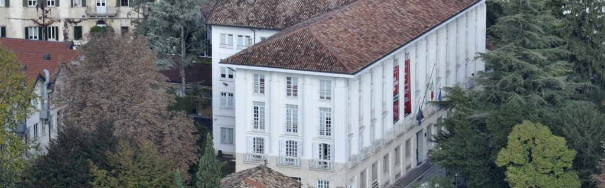
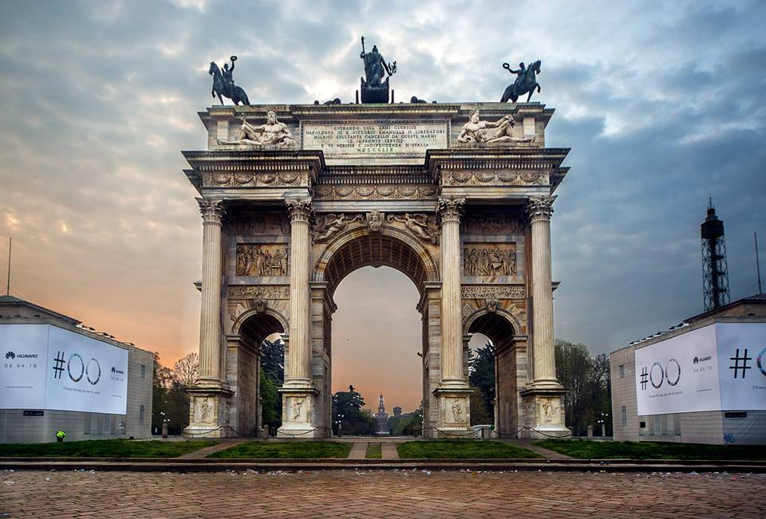
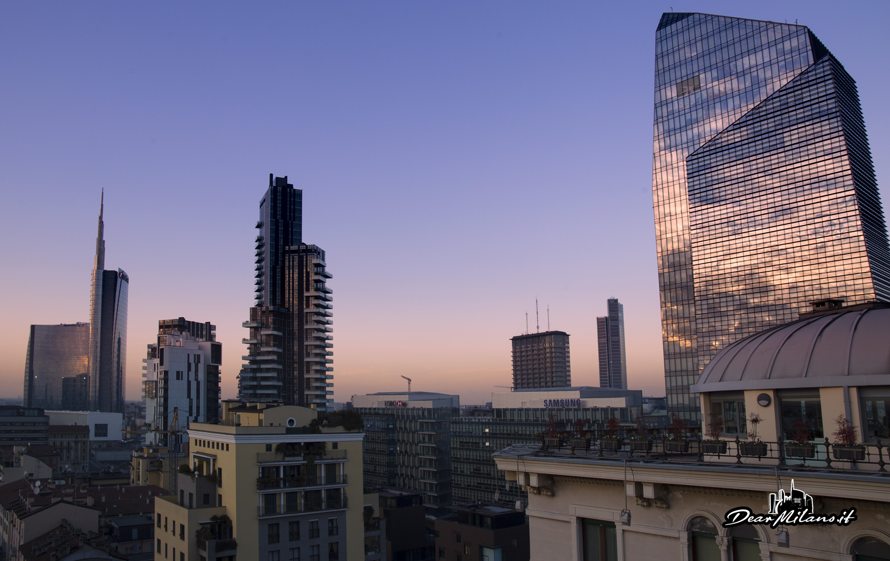
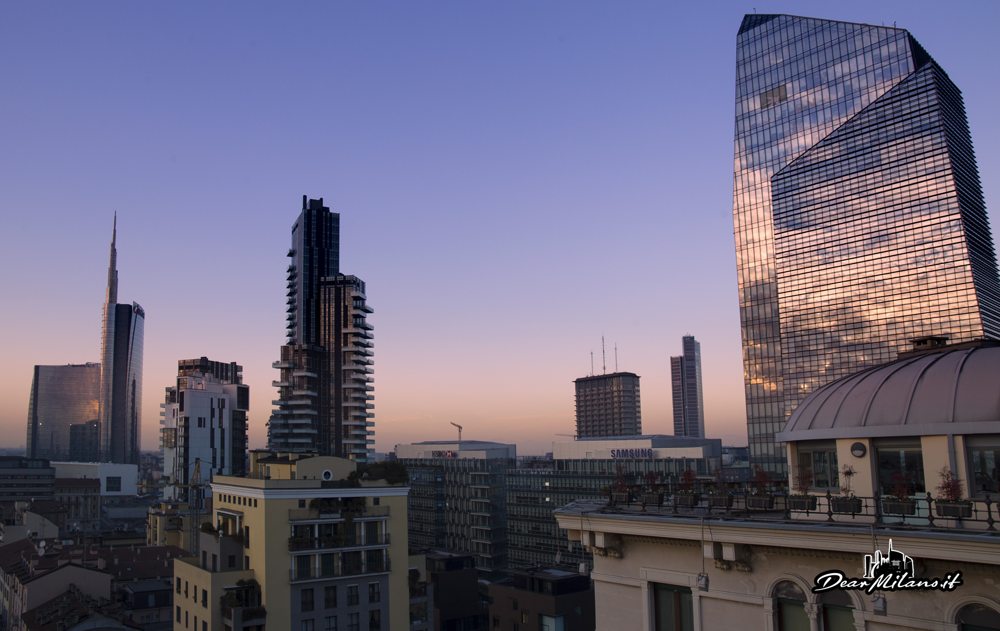
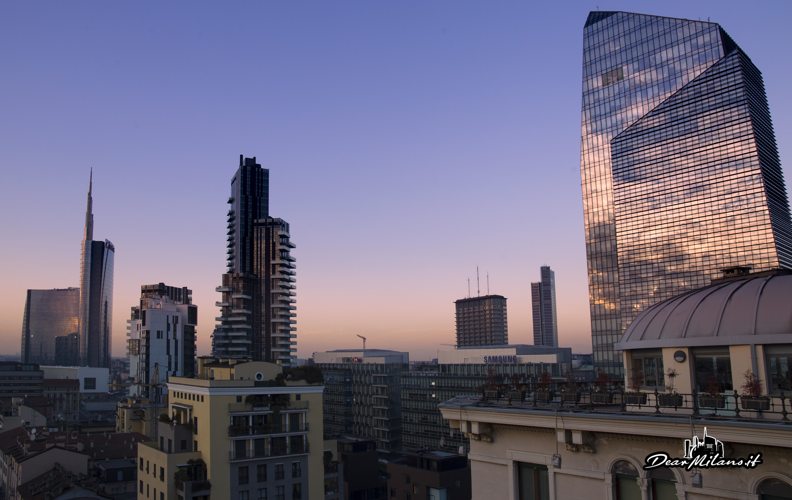

Ciao, mi chiamo Martina e ho 19 anni.
Studio Design degli Interni al
Politecnico di Milano, e ora racconterò attraverso poche righe un po' di me.
Prima del Politecnico e le mie passioni
Prima dell'Università ho frequentato il
Liceo Artistico Giovanni Sello, nella mia citta natale Udine, specializzandomi al terzo anno nell'indirizzo
"Architettura e Ambiente"; oltre a esso il liceo offre altri 7 indirizzi:
Arti Figurative
Audiovisivo e Multimediale
Design dell'Arredamento
Design della Moda
Design Industriale
Grafica
Scenografia

La sede storica dell'Istituto, situata in Piazza Primo Maggio 12B a Udine
Ho sempre vuto una grande passione per l'architettura e il design, ma in generale tutto quello legato all'arte ma allo stesso tempo alla tecnologia; trovo sempre infatti il tempo di dedicare una giornata o un weekend per visitare mostre, fiere o città.
Ho anche un immenso amore per lo sport. Fino l'anno scorso giocavo a pallavolo, ma per motivi vari ho dovuto lasciare. Ora preferisco godermelo alla tv ma soprattutto dal vivo.
Milano mi offre la possibilità di fare, visitare, apprezzare molte più cose rispetta alla piccola Udine.
Le possibilità che da questa città sono veramente infinite.


Alcuni luoghi di Milano che amo di più (Piazza Gae Aulenti, l'Arco della Pace e il Duomo)
Il post-Politecnico
Non so ancora cosa mi possa aspettare dopo la laurea in Design degli Interni, ho ancora molte cose che voglio fare e tante strade che mi si possono aprire o chiudere in questi tre anni.
Sono sicura però di queste cose:
Amo viaggiare e vorrei riuscire a visitare tutti i continenti
Vorrei imparare almeno altre 2 lingue
Desidero accumulare più ricordi possibili da questa esperienza
 
